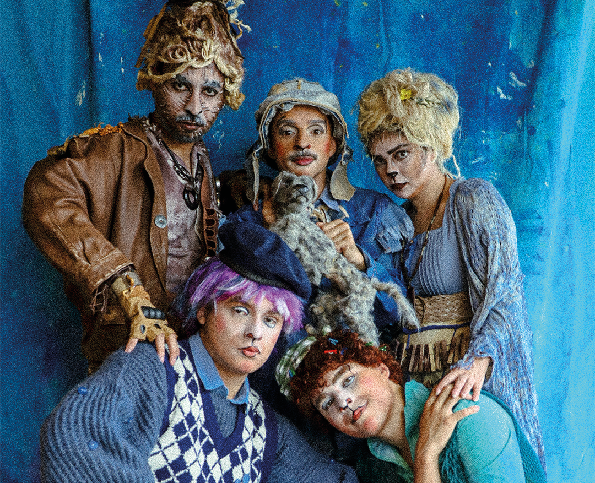
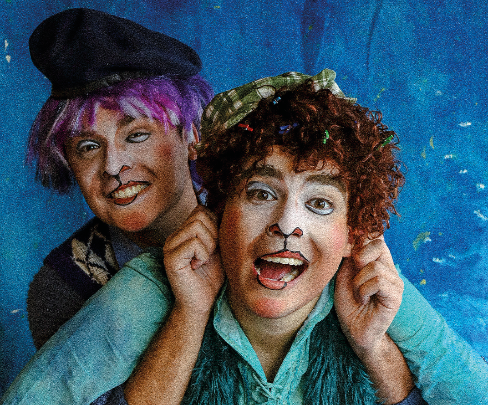

Inspirado na obra "Vidas Secas", de Graciliano Ramos, o espetáculo mergulha na travessia do sertão a partir do olhar sensível da cachorrinha que observa, sente e imagina.
Através de sua perspectiva, a realidade seca e dura ganha contornos de poesia. O que para os homens é luta silenciosa, para Baleia é música e fábula.
Realidade e imaginação se entrelaçam, num universo cênico onde bonecos, brinquedos e engenhocas artesanais dão forma ao invisível, em uma experiência imersiva que conjuga palavra, som e movimento, de forma sensível e inventiva, capaz de transitar entre o concreto e o simbólico, o poético e o cotidiano.

